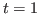
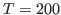
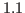
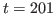
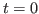
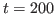
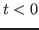
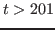
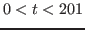

Description
This block is terminated by end;, and contains lines of the
form:
VARIABLE_NAME = EXPRESSION;
The endval block makes only sense in a deterministic model and cannot
be used together with histval. Similar to the initval command,
it will fill both the oo_.endo_simul and oo_.exo_simul variables
storing the endogenous and exogenous variables with the values provided by this block.
If no initval-block is present, it will fill the whole matrices, therefore
providing the initial and terminal conditions for all the endogenous and exogenous
variables, because it will also fill the first and last column/row of these matrices. Due to
also filling the intermediate simulation periods it will provide the starting values for the solver as well.
If an initval-block is present, initval will provide the historical
values for the variables (if there are states/lags), while endval will fill
the remainder of the matrices, thereby still providing i) the terminal conditions
for variables entering the model with a lead and ii) the initial guess values
for all endogenous variables at all the simulation dates for the perfect foresight solver.
Note that if some variables, endogenous or exogenous, are NOT mentioned in the
endval block, the value assumed is that of the last
initval block or steady command (if present). Therefore,
in contrast to initval, omitted variables are not automatically assumed to be 0
in this case. Again, it is strongly recommended to check the
constructed oo_.endo_simul and oo_.exo_simul variables
after running perfect_foresight_setup and before running perfect_foresight_solver
to see whether the desired outcome has been achieved.
Like initval, if the endval block is immediately followed by a
steady command, its semantics are slightly changed.
The steady command will compute the steady state of the model for all
the endogenous variables, assuming that exogenous variables are kept constant
to the value declared in the endval block. These steady state values
conditional on the declared exogenous variables are then written into oo_.endo_simul
and therefore take up the potential roles as historical and terminal conditions
as well as starting values for the solver. An endval block followed by steady
is therefore formally equivalent to an endval block with the specified values
for the exogenous variables, and the endogenous variables set to the associated steady state values.
Options
all_values_requiredSee all_values_required.
Example
var c k; varexo x; … initval; c = 1.2; k = 12; x = 1; end; steady; endval; c = 2; k = 20; x = 2; end; steady;
The initial equilibrium is computed by steady conditional on x=1,
and the terminal one conditional on x=2. The initval-block sets
the initial condition for k, while the endval-block sets the terminal
condition for c. The starting values for the perfect foresight solver are
given by the endval-block. A detailed explanation follows below the next example.
Example
var c k; varexo x; … model; c + k - aa*x*k(-1)^alph - (1-delt)*k(-1); c^(-gam) - (1+bet)^(-1)*(aa*alph*x(+1)*k^(alph-1) + 1 - delt)*c(+1)^(-gam); end; initval; k = 12; end; endval; c = 2; x = 1.1; end; simul(periods=200);
In this example, the problem is finding the optimal path for consumption and
capital for the periods  to , given the path of the exogenous
technology level x. c is a forward looking variable and the
exogenous variable x appears with a lead in the expected return of
physical capital, so we need terminal conditions for them, while k is a
purely backward-looking (state) variable, so we need an initial condition for
it.
Setting x=1.1 in the endval-block without a shocks-block implies that technology
is at  in and stays there forever, because endval
is filling all entries of oo_.endo_simul and oo_.exo_simul except
for the very first one, which stores the initial conditions and was set to  by the
by the initval-block when not
explicitly specifying a value for it.
Because the law of motion for capital is backward-looking, we need an initial
condition for k at time  . Due to the presence of
. Due to the presence of endval, this cannot be
done via a histval-block, but rather must be specified in the initval-block.
Similarly, because the Euler equation is forward-looking, we need a
terminal condition for c at , which is specified in the
endval-block.
As can be seen, it is not necessary to specify c and x in the initval-block and
k in the endval-block, because they have no impact on the results. Due to
the optimization problem in the first period being to choose c,k
at given the predetermined capital stock k inherited from  as
well as the current and future values for technology x, the values for
c and x at time play no role. The same applies to the choice of
c,k at time , which does not depend on k at . As
the Euler equation shows, that choice only depends on current capital as
well as future consumption c and technology x, but not on
future capital k. The intuitive reason is that those variables are
the consequence of optimization problems taking place in at periods
and , respectively, which are not modeled here.
Example
initval; c = 1.2; k = 12; x = 1; end; endval; c = 2; k = 20; x = 1.1; end;
In this example, initial conditions for the forward-looking variables x
and c are provided, together with a terminal condition for the backward-looking
variable k. As shown in the previous example, these values will not affect the simulation
results. Dynare simply takes them as given and basically assumes that there were realizations
of exogenous variables and states that make those choices
equilibrium values (basically initial/terminal conditions
at the unspecified time periods  and ).
The above example suggests another way of looking at the use of steady
after initval and endval. Instead of saying that the
implicit unspecified conditions before and after the simulation range
have to fit the initial/terminal conditions of the endogenous variables
in those blocks, steady specifies that those conditions at and
are equal to being at the steady state given the exogenous
variables in the initval and endval-blocks. The
endogenous variables at and are then set to the corresponding steady state
equilibrium values.
The fact that c at and k at specified in
initval and endval are taken as given has an important
implication for plotting the simulated vector for the endogenous
variables, i.e. the rows of oo_.endo_simul: this vector will
also contain the initial and terminal
conditions and thus is 202 periods long in the example. When you specify
arbitrary values for the initial and terminal conditions for forward- and
backward-looking variables, respectively, these values can be very far
away from the endogenously determined values at and . While the
values at and are unrelated to the dynamics for , they
may result in strange-looking large jumps. In the example above,
consumption will display a large jump from to and capital will
jump from to when using rplot or manually plotting oo_.endo_val.